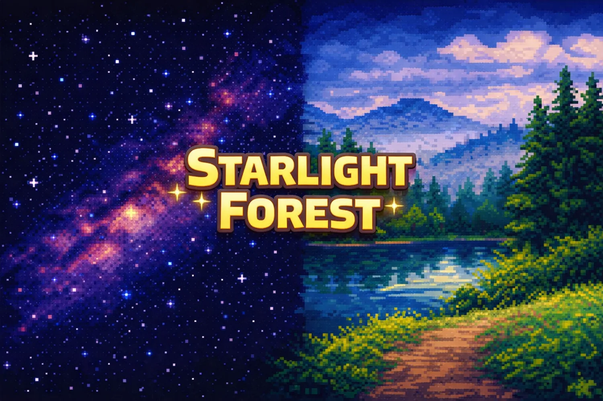
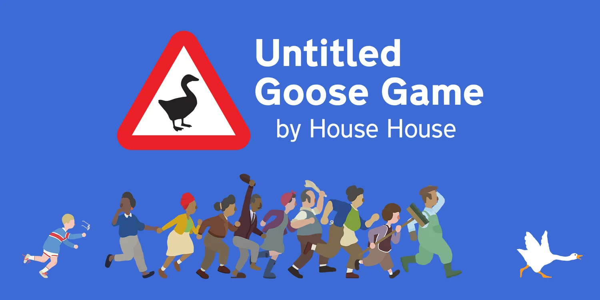
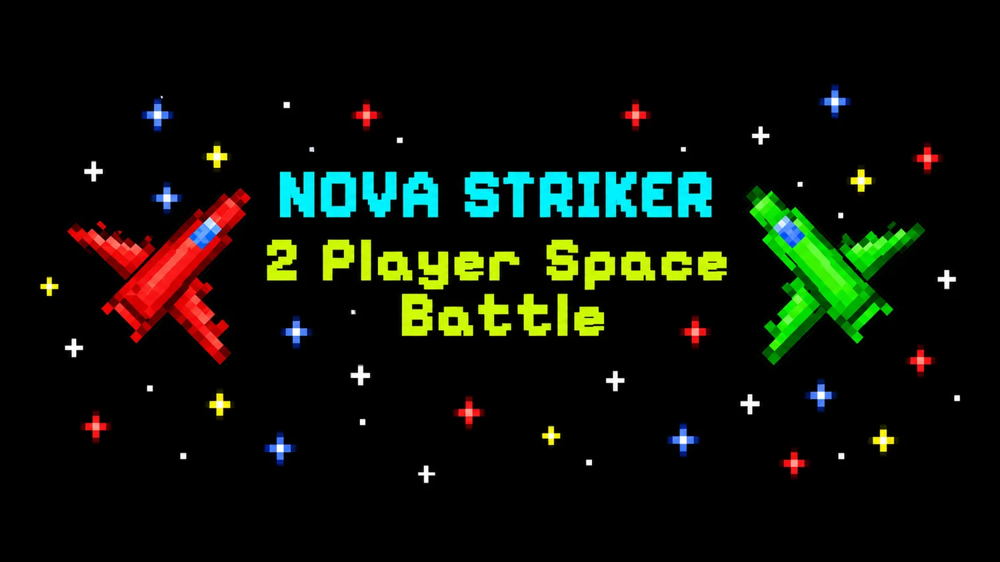

VR
VRVR-boogschieten
Bow & Arrow Trials
Een VR-boogschietgame waarin je drie verschillende levels speelt. Je schiet op doelen en probeert sneller te zijn dan je tegenstander, die ook met een boog schiet.
Projectarchief
Van een VR-boog tot een gamejam in Kopenhagen.
Bekijk mijn games, speelbeelden en de code achter de mechanics.
VRVR-boogschieten
Een VR-boogschietgame waarin je drie verschillende levels speelt. Je schiet op doelen en probeert sneller te zijn dan je tegenstander, die ook met een boog schiet.

PC2D-platformer
Een 2D-platformgame waarin je door verschillende werelden speelt. Onderweg ontwijk je vijanden en obstakels en verzamel je coins.
 GAMEJAM
GAMEJAMVerhalend avontuur
Een korte game over het loslaten van gedachten. Tijdens het spelen laat je gedachten verdwijnen met een timersysteem, terwijl de geluiden veranderen.

PCStealthpuzzel
Een nagemaakt deel van Untitled Goose Game waarin je als gans allerlei streken uithaalt bij een boer. Je probeert hem te plagen zonder gepakt te worden.

ARCADE2D-top-downshooter
Een 2D-ruimteschietgame waarin twee spelers met hun eigen ruimteschip tegen elkaar vechten. De game is gemaakt tijdens een gamejam en kan op een arcadekast worden gespeeld.